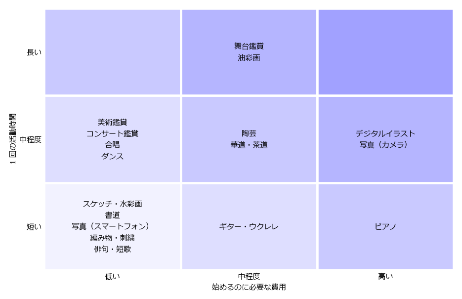

16. 自分に合った芸術の選び方
第 3〜15 章で見てきたように、趣味として楽しめる芸術は数多い。本章では、その中から自分に合った分野を選ぶための観点と、分野の比較、選び方の手順を示す。
16.1. 選ぶときの観点
- 何に興味があるか
最も大切な観点である。「あの絵のような色を出してみたい」「あの曲を弾いてみたい」など、心が動いた経験があれば、それを手がかりにする。興味があるものから始めると、続けやすい。
- 費用
始めるときにかかる費用（道具や楽器の購入費、教室の入会金など）と、続けるためにかかる費用（材料費、月謝、鑑賞のチケット代など）がある。始めるときの費用が少なくても、続けるための費用がかさむ分野もあるため、両方を考える。
- 時間
1 回の活動にどれくらいの時間が必要かを考える。仕事や家事で忙しい人は、短い時間でも少しずつ進められる分野が向いている。
- 場所
自宅でできるか、教室や専用の設備が必要かを考える。自宅で活動する場合は、道具を広げる場所や、音やにおいが周囲に与える影響にも注意する。
- 一人か、仲間とか
一人で自分のペースで楽しみたいか、仲間と一緒に活動したいかによって、向いている分野は異なる。
- 体力・身体の条件
ダンスのように体力を使う分野もあれば、座ったままできる分野もある。目や手指、膝などに負担がかかる分野もあるため、自分の体の状態に合わせて選ぶ。
16.2. 分野の比較
主な分野について、始めるのに必要な費用と 1 回の活動時間の目安を 図 16.1 に、各観点の目安を 表 16.1 に示す。いずれも、標準的な始め方をした場合の大まかな目安であり、道具の選び方や取り組み方によって大きく変わる。


図 16.1 分野ごとの、始めるのに必要な費用と 1 回の活動時間の目安
図の目安は次のとおりである。
始めるのに必要な費用：低い（1 万円程度まで）、中程度（1 万〜3 万円程度）、高い（3 万円程度以上）
1 回の活動時間：短い（1 時間程度以内でも楽しめる）、中程度（1〜3 時間程度）、長い（3 時間以上、半日程度）
分野 |
始めるのに必要な費用 |
1 回の活動時間 |
主な場所 |
一人でできるか |
体力 |
|---|---|---|---|---|---|
美術鑑賞 |
低い |
中程度 |
美術館、ギャラリー |
できる |
少し使う（歩く） |
コンサート鑑賞 |
低い |
中程度 |
ホール、ライブハウス |
できる |
あまり使わない |
舞台鑑賞 |
中程度 |
長い |
劇場 |
できる |
あまり使わない |
スケッチ・水彩画 |
低い |
短い |
自宅、屋外 |
できる |
あまり使わない |
油彩画 |
中程度 |
長い |
自宅、教室 |
できる |
あまり使わない |
デジタルイラスト |
高い |
中程度 |
自宅 |
できる |
あまり使わない |
書道 |
低い |
短い |
自宅、教室 |
できる |
あまり使わない |
写真（スマートフォン） |
低い |
短い |
どこでも |
できる |
少し使う（歩く） |
写真（カメラ） |
高い |
中程度 |
屋外 |
できる |
少し使う（歩く） |
陶芸 |
中程度 |
中程度 |
教室、工房 |
教室で行う |
少し使う |
編み物・刺繍 |
低い |
短い |
どこでも |
できる |
あまり使わない |
ピアノ |
高い |
短い |
自宅、教室 |
できる |
あまり使わない |
ギター・ウクレレ |
中程度 |
短い |
自宅 |
できる |
あまり使わない |
合唱 |
低い |
中程度 |
所属する団体の練習場所 |
仲間と行う |
少し使う |
ダンス |
低い |
中程度 |
教室 |
教室で行う |
使う |
俳句・短歌 |
低い |
短い |
どこでも |
できる |
あまり使わない |
華道・茶道 |
中程度 |
中程度 |
教室 |
教室で行う |
少し使う（正座など） |
16.3. 選び方の手順
何から始めるか迷った場合は、図 16.2 の流れを参考にするとよい。
図 16.2 自分に合った芸術の選び方の例
この図は一つの例にすぎない。実際には、気になる分野を一つに絞り込む必要はなく、いくつかの体験教室に参加して比べてみるのがよい。鑑賞から始めて、気に入った分野を自分でもつくってみるという順番もある。
16.4. 選ぶときのこつ
- まず体験してみる
多くの分野で、1 回限りの体験教室やワークショップが開かれている。道具をそろえる前に体験すると、自分に合うかどうかが分かり、無駄な出費を避けられる。
- 道具は最初から高価なものをそろえない
入門用の道具やセットで始め、続けられそうだと分かってから、必要に応じて良い道具に買い替えればよい。ただし、品質があまりに低い道具は思いどおりに使えず、上達を妨げることがある。店の人や教室の先生に相談して選ぶとよい。
- 完璧を目指さない
最初から上手にできる人はいない。うまくできなくても楽しめることが、趣味として続けるための大切な条件である。
- 続かなくてもよい
試してみて合わなかったら、別の分野に移ってもかまわない。いくつかの分野を経験することで、本当に好きなものが見つかることもある。